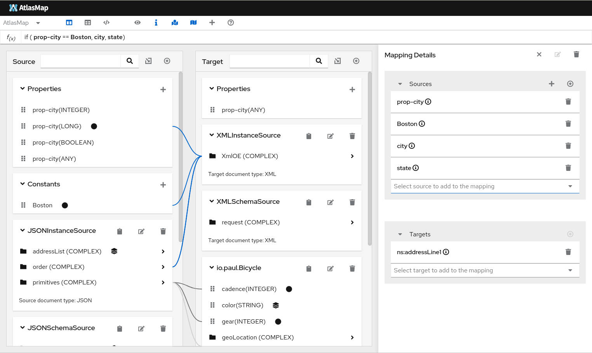
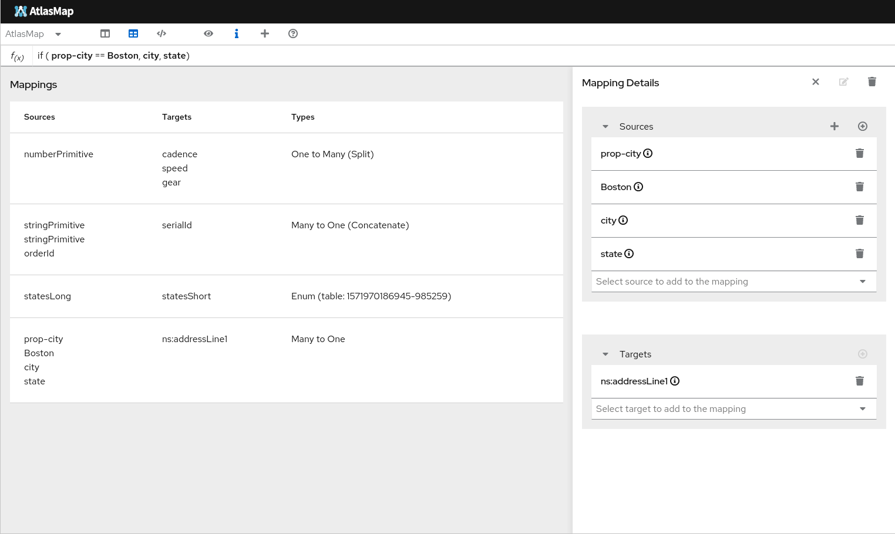

AtlasMap is a data mapping solution with interactive web based user interface, that simplifies configuring integrations between Java, XML, and JSON data sources. You can design your data mapping with AtlasMap Data Mapper UI canvas, and then run that data mapping via runtime engine.
In addition to plain Java API provided by runtime engine, AtlasMap also provides camel-atlasmap Component to perform data mapping as a part of Apache Camel route.
AtlasMap Data Mapper UI is primarily designed to work within Syndesis UI. The easiest way to install and run Data Mapper UI is to install and run Syndesis. Simply follow the Syndesis Developer Handbook to install, and run Syndesis UI. You will find the Data Mapper UI under the integrations panel after selecting or adding an integration with a data mapping step involved in the integration.

